本文最后更新于 2026年11月5日 晚上
北京大学信息科学技术学院 生成模型基础(2025秋)的课程笔记
第六讲：Diffusion
在经历了VAE AR GAN Flow四大模型的洗礼后
我们终于要迎来生成模型的集大成之作，当下图像生成领域最强力的模型：Diffusion
和前四种模型相比，Diffusion深层、非序列且非MLE
何为diffusion
diffusion一词意为扩散，来源于粒子在水中的扩散运动
假设x为初始分布在水里随机某个位置的粒子
经过扩散后形成z，符合标准正态分布
如果我们能从数据中学习到神经网络来逆推这个过程，我们就可以把z还原为x
三大挑战：
- 如何模拟扩散过程→前向传播
- 如何逆向推演→反向传播
- 如何训练模型→score matching
前向传播
前向传播显然是diffusion中最容易理解的部分，即对数据加噪过程
我们设初始的image为x0，然后逐步对其加噪
x1=1−β1x0+β1ϵ1,ϵ1∼N(0,I),β1∈(0,1)
可以理解为用β1进行加噪，而用1−β1去除上下文信息
那么在已知x0情况下x1的分布q(x1∣x0)=N(x1;1−β1x0,β1I)
由正态分布均值和标准差的性质，这是易得的，相当于均值变为(1−β1)x0，方差变为β1
以此类推，类似的我们有：
x2=1−β2x1+β2ϵ2,ϵ2∼N(0,I),β2∈(0,1)
q(x2∣x1)=N(x2;1−β2x1,β2I)
写成通项就是：
xt+1=1−βt+1xt+βt+1ϵt+1,ϵt+1∼N(0,I),βt+1∈(0,1)
q(xt+1∣xt)=N(xt+1;1−βt+1xt,βt+1I)
我们高中就学过，这种形如xt+1=axt+b，其中a,b为常数的数列，通项公式都不难解出
这里我们采用了迭代法，略去过程，迭代的结果如下：
设αt+1=(1−βt+1)...(1−β1)
则xt+1=αt+1x0+1−αt+1ϵ,ϵ∼N(0,I)
q(xt+1∣x0)=N(xt+1;αt+1x0,(1−αt+1)I)
此时如果令αt→0,T→∞，则q(xT∣x0)→N(0,I)
这就是在加噪次数足够多时，最后可以趋近标准正态分布
反向传播
反向传播的过程就没那么好理解了，相当于要从噪声xT还原回图像x0
我们完全不了解ground truth x0的分布
只知道xT的分布q(xT)，x0到xT的传播过程
需要学习如何反向传回去
首先我们可以轻松sample出xT∼N(0,I)
但是从xt→xt−1这一步，显然不能直接进行逆推，需要使用神经网络来实现
由于x0和xT是一样的，所以我们可以假设前向和反向的每一个过程一一对应
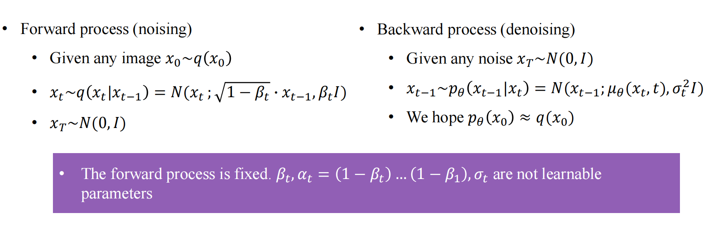
形式化来说，就是设xt−1∼pθ(xt−1∣xt)=N(xt−1;μθ(xt,t),σt2I)
其中pθ(xt−1∣xt)是一个神经网络
我们希望这个神经网络可以尽可能确保前向和反向传播的一一对应，也就是pθ(x0)≈q(x0)
DDPM
接下来就是diffusion理论的真正重头戏了
这一部分数学推导非常非常多，笔者自己学的时候也被绕得晕头转向，还记得wps老师在cv课上自述，他看DDPM这篇论文足足花了一周时间才完全弄懂，所以这里我也只能是在力所能及的地方尽量多写一些……
最基本的评估生成模型质量的方式，显然是优化MLE
也即maximize Eq0(x0)[logp0(x0;θ)]
这等价于minimize Eq0(x0)[−logp0(x0;θ)]
问题在于，对于任意x0，要计算它由pθ产生的概率并不容易，要经过非常多层神经网络
于是我们又要回到经典的ELBO(如果忘了的话可以回顾一下VAE)
首先我们有Eq(x0)[−logpθ(x0)]
将其逐步拆分：Eq(x0)q(x1:xT∣x0)[−logpθ(x0)]
为了简便，记z=x1:xT，原式可改写为
Eq(x0)q(z∣x0)[−logq(z∣x0)q(z∣x0)pθ(x0)]
然后利用条件概率公式，进一步变为
Eq(x0)q(z∣x0)[−logq(z∣x0)q(z∣x0)pθ(z∣x0)pθ(x0,z)]
然后经典拆成两项
Eq(x0)q(z∣x0)[−logq(z∣x0)pθ(x0,z)]+Eq(x0)q(z∣x0)[−logpθ(z∣x0)q(z∣x0)]
这一幕实在是太眼熟了，第二项就是−KL(q∣∣pθ)，一定≤0
我们只需考虑第一项(ELBO)
将z代回，变为
Eq(x0)q(x1:xT∣x0)[−logq(x1:xT∣x0)pθ(x0:xT)]
再经过拆分，最终结果为
minimize Eq(x0:xT)[−logpθ(x0∣x1)+Σt=2TKL(q(xt−1∣xt,x0))∣pθ(xt−1∣xt)]
为了最小化这个期望，与p,q相关的分布都是可计算的
pθ(xt−1∣xt)∼N(xt−1;μθ(xt,t),σt2I)
q(xt−1∣xt,x0)∼N(xt−1;μt~(xt,x0),βt~I)
这里
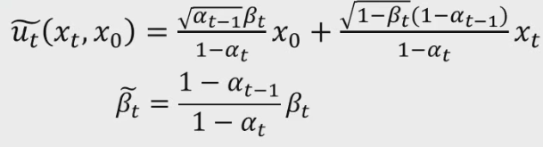
这个推导会留作课后作业，也是DDPM中非常神奇的一个trick
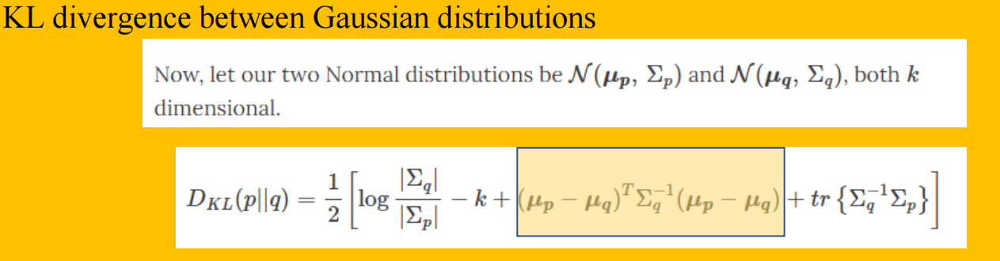
然后呢，两个高斯分布之间的KL散度是有公式的，没记错的话这个公式是VAE那一章节的课后作业
代入公式后，q,pθ之间的KL散度即为
2σt21∥μt~(xt,x0)−μθ(xt,t)∥22
上面的公式还是不够“优雅”，于是数学家们又开始神奇变换
将xt=αtx0+1−αtϵ代入μt~(xt,x0)中
μt~(xt,x0)=1−βt1(xt−1−αtβtϵ),ϵ∼N(0,I)
与此同时我们可以人为“规定”μθ的表达式也为这个格式，将ϵ换成ϵθ即可
μθ(xt,t)=1−βt1(xt−1−αtβtϵθ(xt,t))
这样一来KL散度的公式又可以改写为
2σt2(1−β)(1−αt)βt2∥ϵ−ϵθ(xt,t)∥22
忽略系数，将xt表达式代入，变为
minimize ∥ϵ−ϵθ(αtx0+1−αtϵ,t)∥22
这便是diffusion的训练过程！
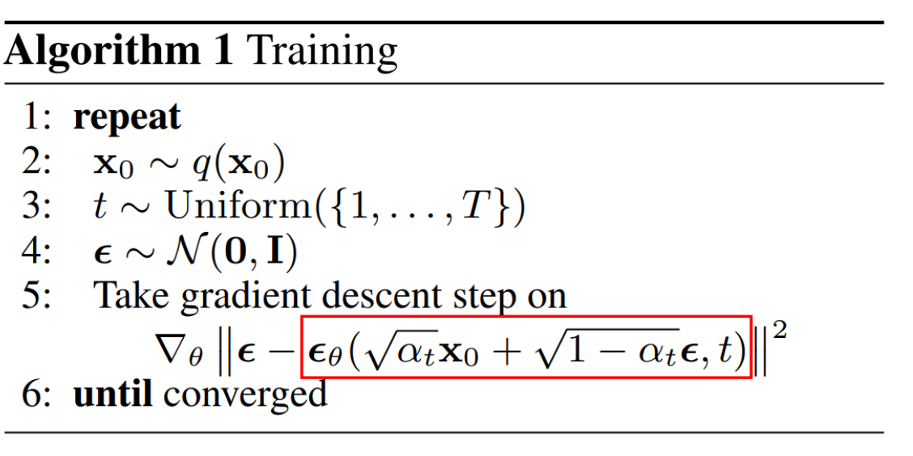
上面这一长串推导就是大名鼎鼎的 Denoising Diffusion Probabilistic Model (DDPM)
具体训练中，diffusion model常用U-net结构，并且带有残差块或者attention层
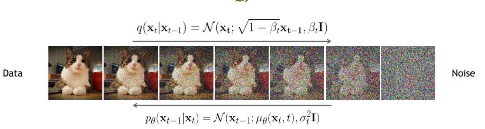
如上，βt,σt分别控制前向与反向传播的方差
βt通常会缓慢增加到预设值(like 0.02)，在原论文中作者设定βt=σt2
DDPM and score function
这里我们将会从另一个角度理解DDPM
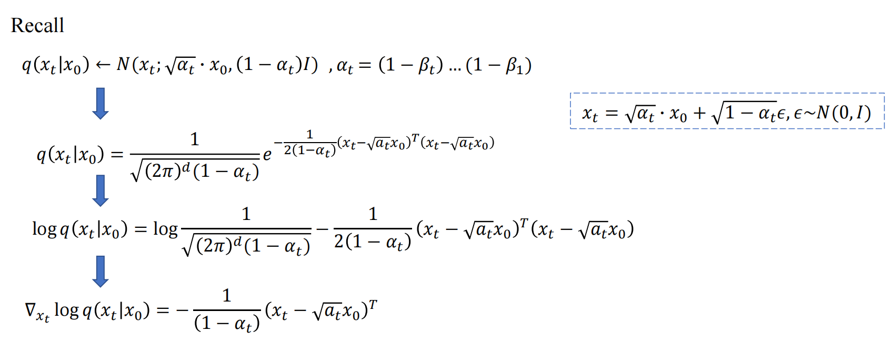
如上图，根据之前推导过的q(xt∣x0)我们对其取对数然后求梯度
最终有∇xtlogq(xt∣x0)=−1−αt1ϵ
我们称对一个概率密度函数的一个点求导，这个值就是score function
需要明确的是，Score matching 训练的本质，不是让网络去学习干净图像的 Score Function，而是要它去匹配前向加噪过程中，每一步产生的带噪图像的 Score Function。
因为 Score Function 与分布之间基本具备一一对应关系，所以网络学到的实际就是一系列噪声条件下的分布信息。
DDPM与随机微分方程
数院的同学喜欢用微分方程来描述DDPM
例如dtdx=f(x,t)
那么x(t)−x(0)=∫0tf(x,t)dt
欧拉法数值解：x(t+Δt)=xt+Δtf(x,t)
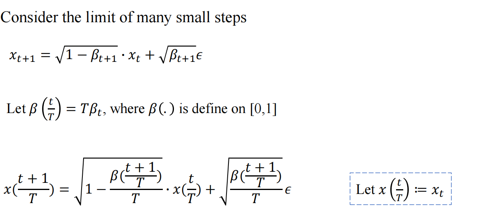
如上图，在[0,1]上考虑无穷多步的DDPM
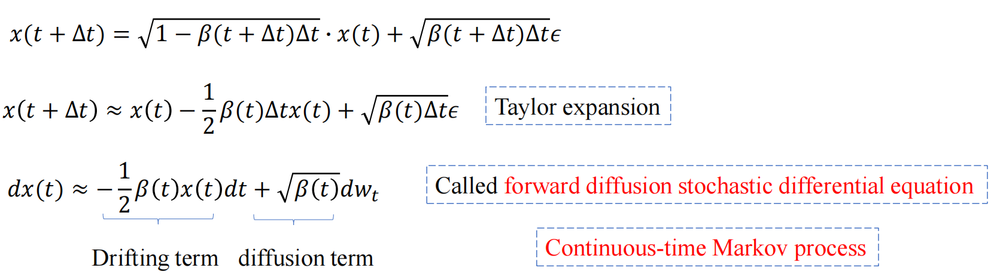
然后通过泰勒展开，最后会得到一个前向扩散随机微分方程(SDE)
ODE正向和反向过程显然是一致的，但SDE则不然
前向可以直接计算，反向还是需要加上score function这一项，难以直接计算，必须采用神经网络估计
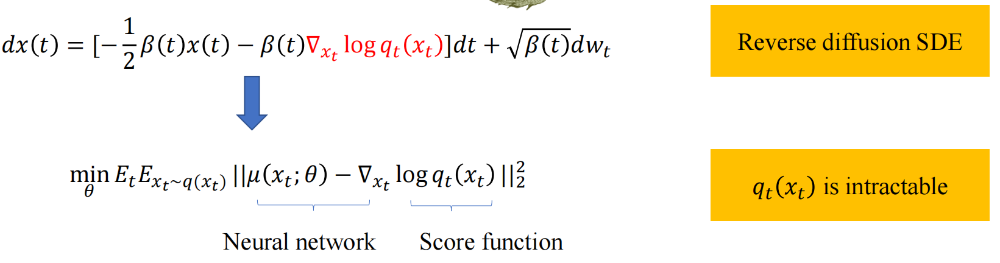
笔者按：终于啃完了这块硬骨头，虽然所有的数学推导本人都似懂非懂，全盘忘却……计划还要写一个附录来再补充一下DDPM的数学推导
附录
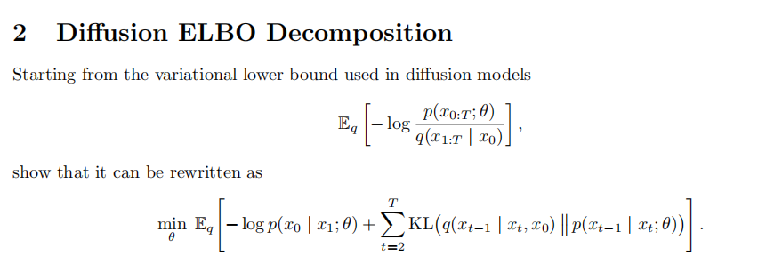
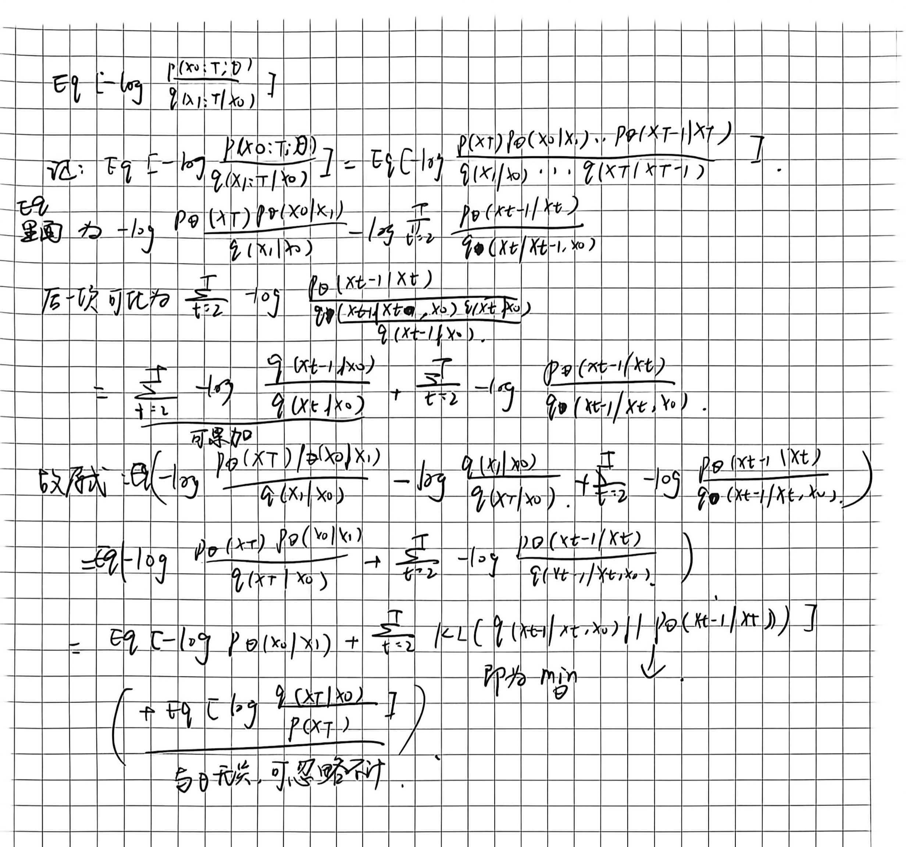
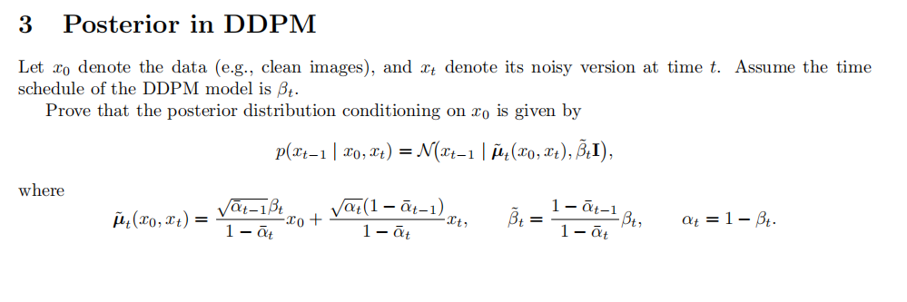
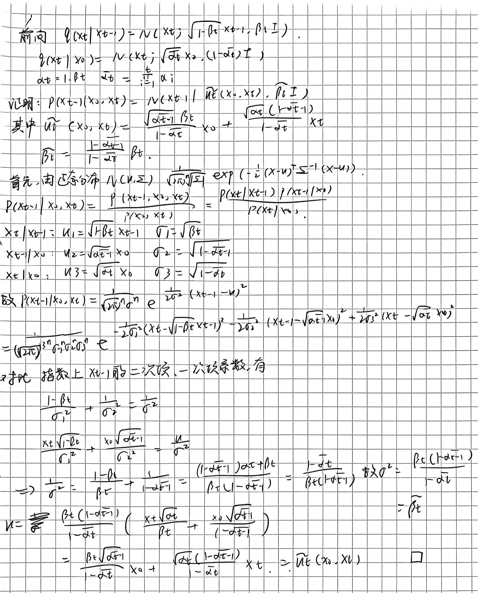